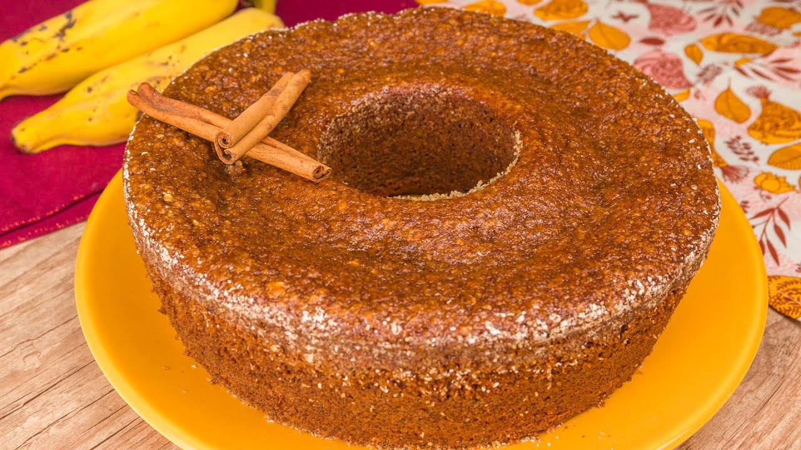

Bolo de Banana e Aveia

Descrição:
Bolo de aveia ótimo para reduzir peso!
Fácil e pratico para seu dia.
Ingredientes:
250 g de aveia fina (1 caixinha)
4 ovos
4 bananas
1 colher (sopa) fermento
½ xícara de óleo
1 ½ xícaras de açucar mascavo
Modo de preparo:
Bata no liquidificador os 4 ovos, 1/2 xícara de óleo, 4 bananas, 1 1/2 xícara de açúcar (pode ser mascavo).
Despeje esta mistura na aveia fina com o fermento e opcionais a gosto.
Leve para assar em forma untada, em forno médio, pré-aquecido, por cerca de 40 minutos, ou até dourar.